Next: About this document ...
Physics 231. Week 2. Motion in One Dimension.
Outline: Motion in 1D
- Specifying the position of our "particle" (e.g., the center-of-mass
of a person, car, etc.)
- Give distance from a reference position
- [Ex.] A wall in a room containing two people could define x=0. "Mo is located at x=5'." then means that Mo is 5' to the right of the wall.
- 1D problems are graphically shown on a number line
- the reference position is at x=0
- it can be horizontal or vertical as befits the problem
- there are 2 possible directions of motion, + (positive x) or -
- 2D and 3D problems are graphically shown on cartesian coordinate systems
- Distance vs displacement
- distance = path length = 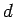
- displacement = difference in final and initial positions =
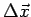
-
 , where 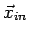
and
, where 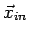
and  are the initial and final position vectors
are the initial and final position vectors
- distance is a scalar
- displacement is a vector
- in 1D, a vector's direction is inferred by the sign (e.g.,
``-" means the negative
 direction)
direction)
-
 = the magnitude or length of displacement vector
= the magnitude or length of displacement vector
- in 1D,
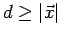
- in 1D,
 if there are no reversals in direction.
if there are no reversals in direction.
- Average speed vs average velocity
- Average speed =
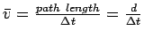
- Average velocity =

- [Ex.] Mo walks 5´ left, 6´ right, 1´ left, and 8´ right in 30 seconds.
What were his average speed and velocity? Ans. 0.66´s and +0.27´s 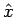.
- Instantaneous velocity and speed
- instantaneous velocity:

- instantaneous speed:
- [Note:] This goes against previous trend ...
- [Q:] Is
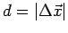? (Is distance just the magnitude of displacement?) Ans: No
- [Q:] Is
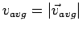 ? Ans: No
- [Q:] Is
? Ans: yes
- Example: P.6.
- Example: P.9.
- Acceleration = rate of change of velocity
- Average acceleration:

- Instantaneous acceleration:

- Acceleration is caused by a force.
 .
.
- Direction of 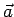 is indicated by sign.
- $$
-
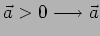 points in
 direction.
direction.
- $$
-
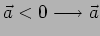 points in 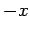 direction.
- $$
- If and 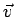 are in same direction, object is speeding up
- $$
- If and are in opposite direction, object is slowing up
- Ex.
- A car positioned left of the origin is speeding up as it
travels to the right. What are the signs of ,
 , and
, and  ? Ans:
-, +, and +.
? Ans:
-, +, and +.
- Ex.
- P.17.
- Motion diagrams: pictures showing an objects x, v and a at evenly spaced
intervals of time.
- One-dimensional motion with constant acceleration - equations
- Velocity equations
-
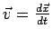 (for any acceleration)
-
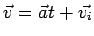 (uniform a)
-
 (uniform a)
(uniform a)
- Position equations
-
 (any acceleration)
(any acceleration)
-
 (uniform a)
(uniform a)
-
 , so
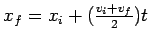 (uniform a)
, so
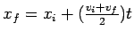 (uniform a)
-
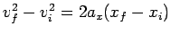 (uniform a)
- Use these equations for 1D motion problems with uniform acceleration.
- Ex.
- P. 23.
- $$
- Free fall problems. (
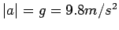)
- Ex.
- P. 43.
Next: About this document ...
Jason Pinkney
2005-12-08